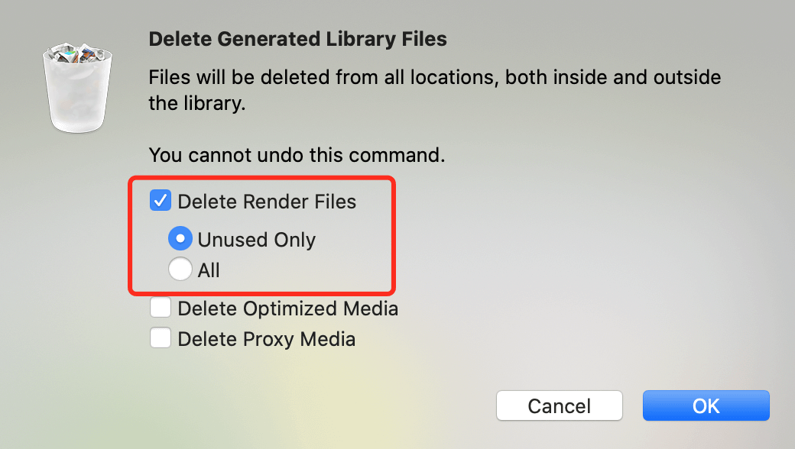
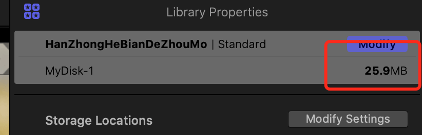

在 Final Cut Pro 中管理渲染文件
渲染就是为项目中 Final Cut Pro 无法实时播放的部分创建临时视频和音频渲染文件的过程。当添加效果、转场、发生器、字幕和其他项目时，您将需要对它们进行渲染才能以高质量进行播放。
在时间线中，需要渲染的片段上方将出现一条浅灰色点线。
Final Cut Pro 默认是打开实时渲染的，可以在 preference - playback 里看到 rendering：
渲染文件默认将储存到项目文件内。可以打开项目设置查看：
随着时间的推移，渲染文件会累积，并占用储存空间，项目文件会越来越大：
如果要释放储存空间，您可以删除所选事件中未使用的渲染文件或者删除所选项目或事件的所有渲染文件。您还可以删除给定资源库的所有渲染文件。原始媒体文件将不会删除，因此您始终可以从原始媒体中重新生成渲染文件。
选中项目文件，点击 file - delete generated library files：
在弹出的对话框中，可以选择删除未使用的文件或者全部渲染文件：

如果选择了删除全部渲染文件，如果设置里打开了自动渲染，则删除后会立刻开始生成新的渲染文件。
删除后可以看到项目文件小了很多：

如果打开了自动渲染，可以看到系统开始新的渲染了：
如果不想自动渲染，可以关闭设置里的自动渲染，然后在需要的时候手动进行渲染，首先在设置里关闭自动渲染，然后在需要进行渲染的时候，点击 modify - render all 系统就会开始渲染 timeline 的项目了：
参考文章：
在 Final Cut Pro 中管理渲染文件
Final Cut Pro 中的“播放”偏好设置
标签：无